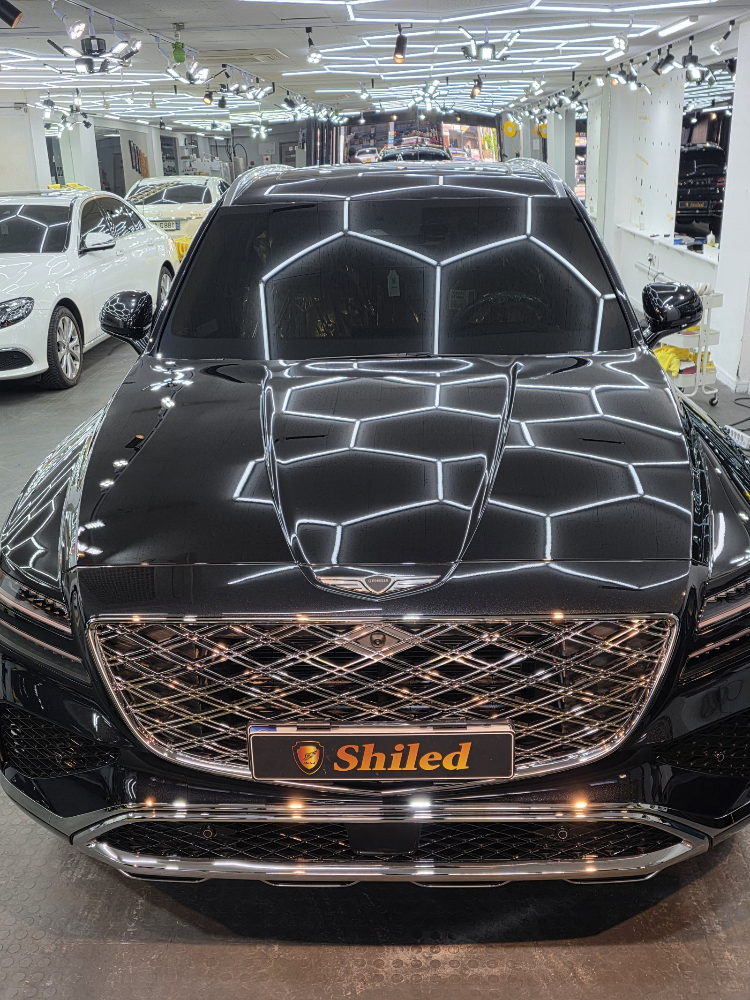
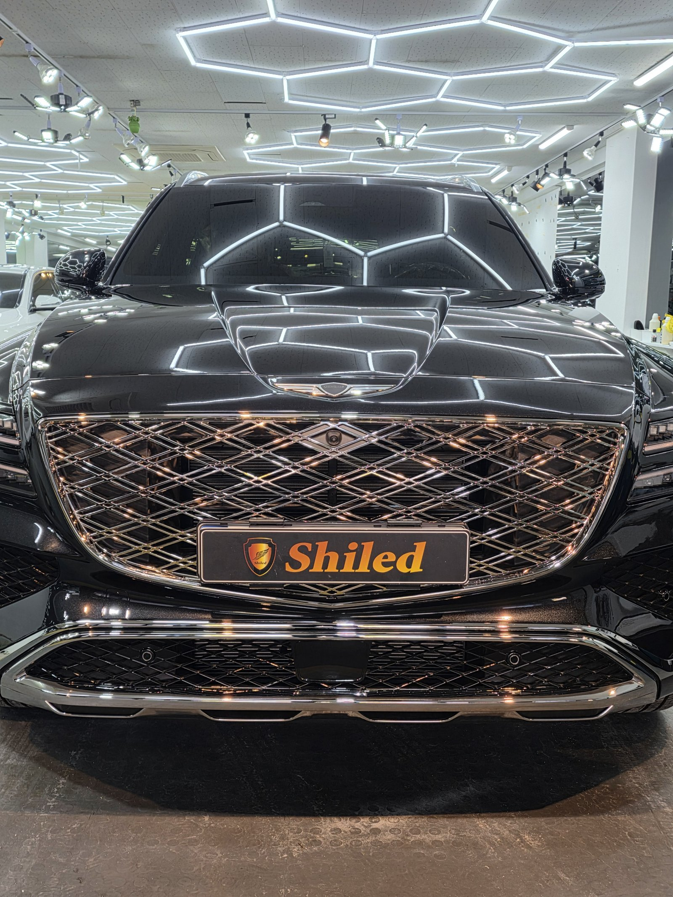
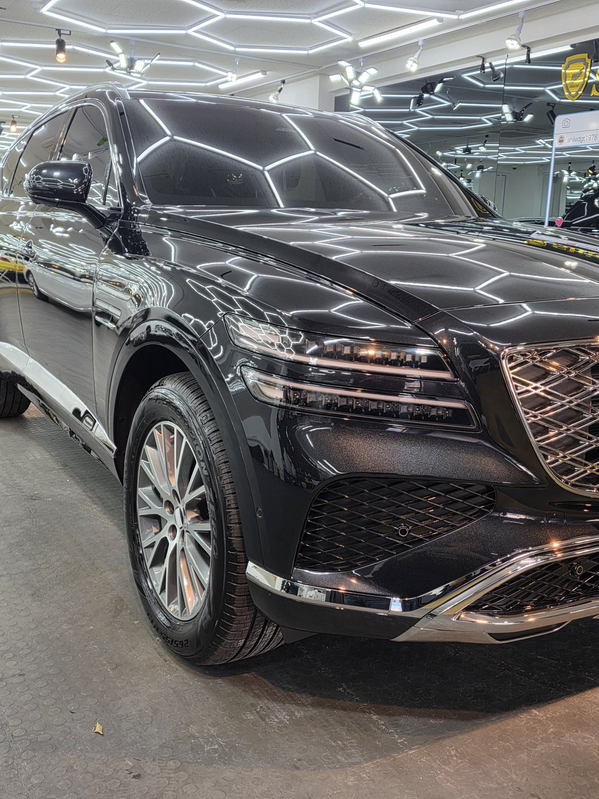
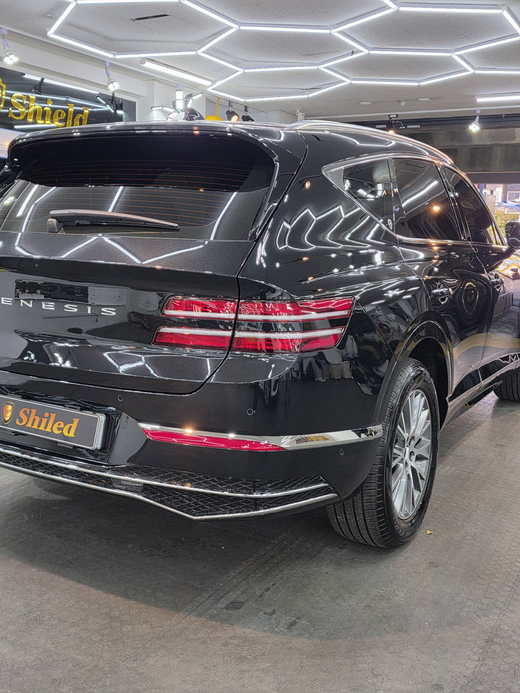
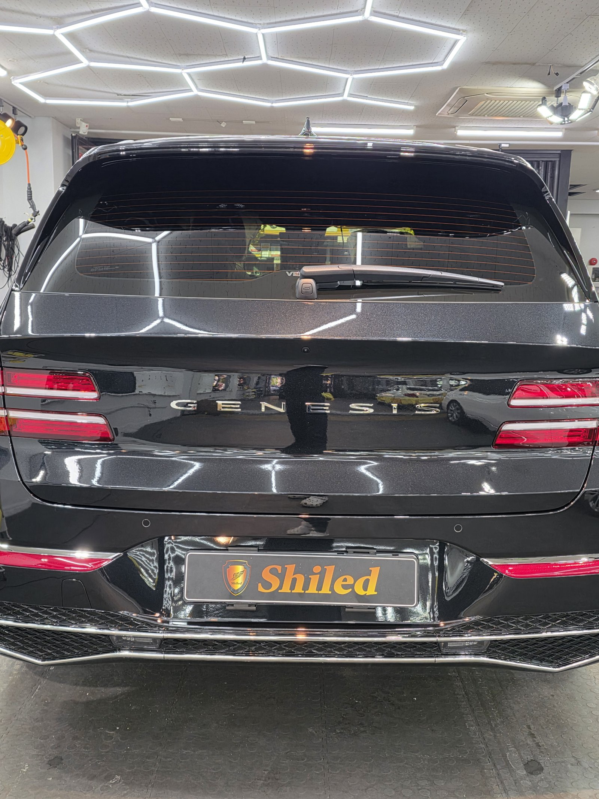
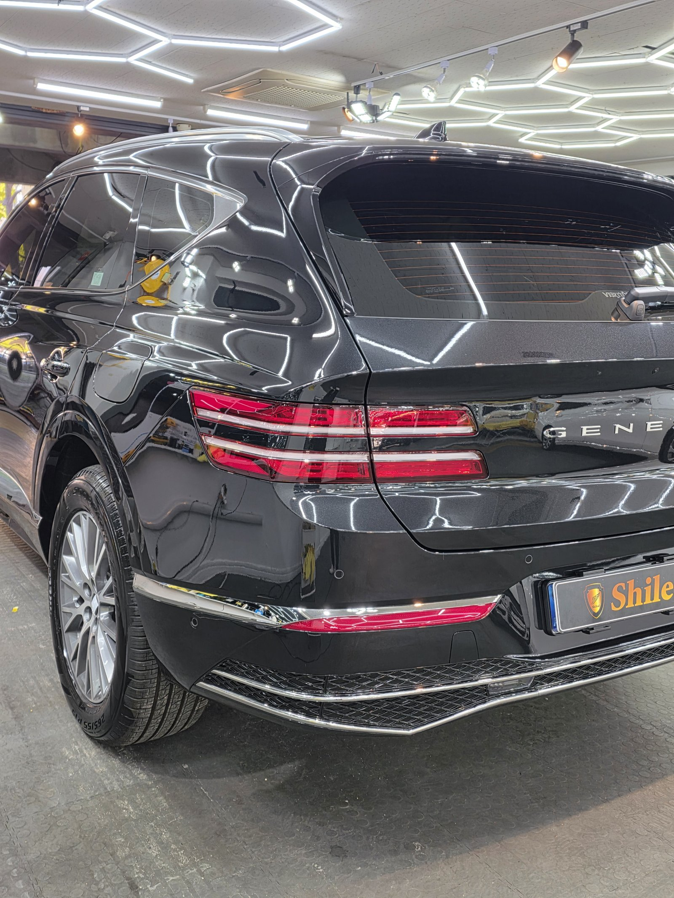
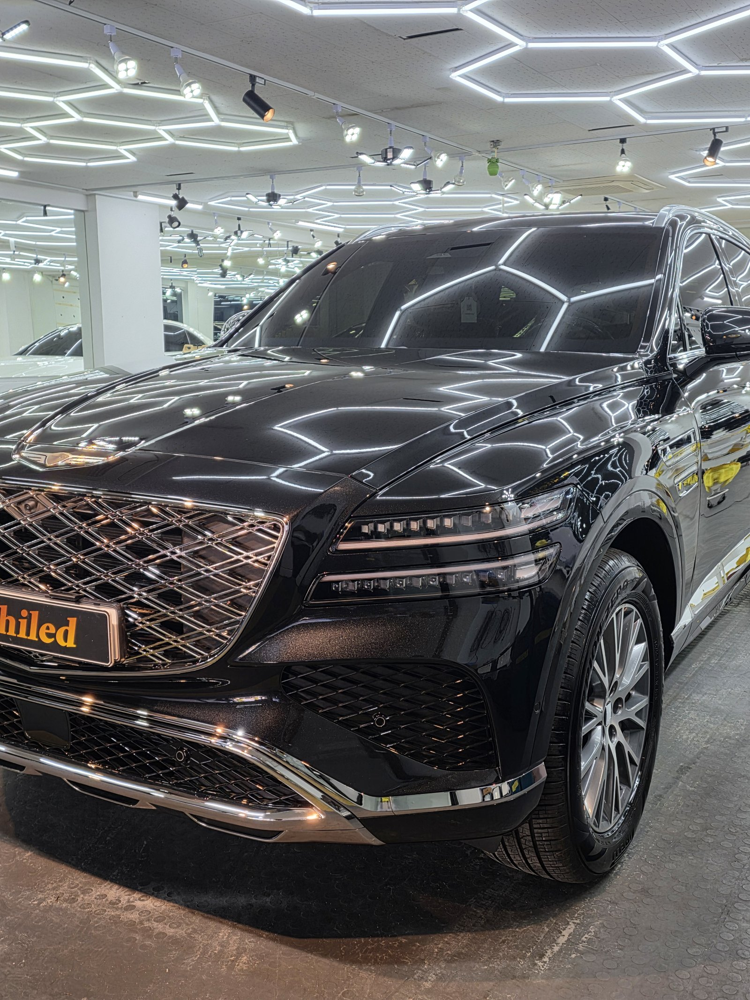
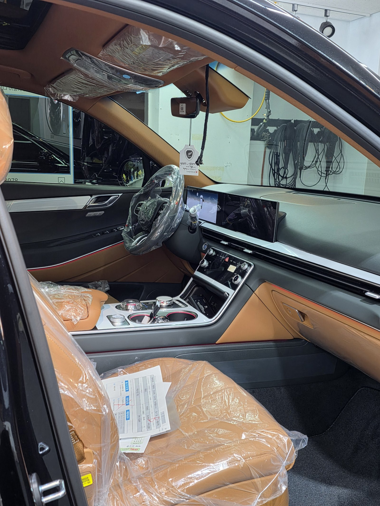
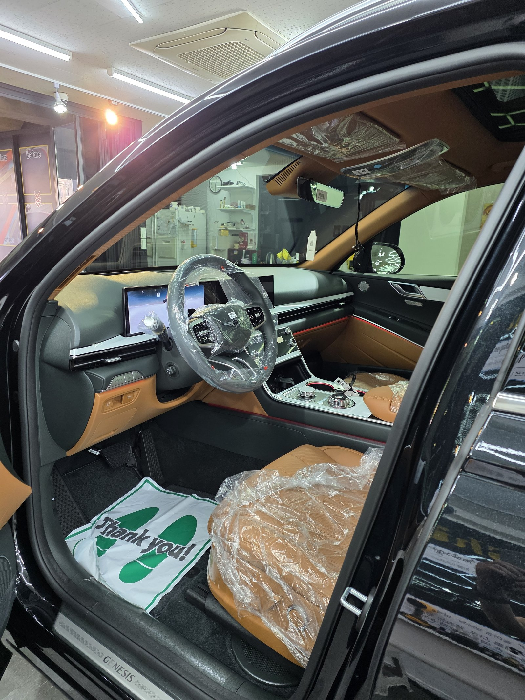
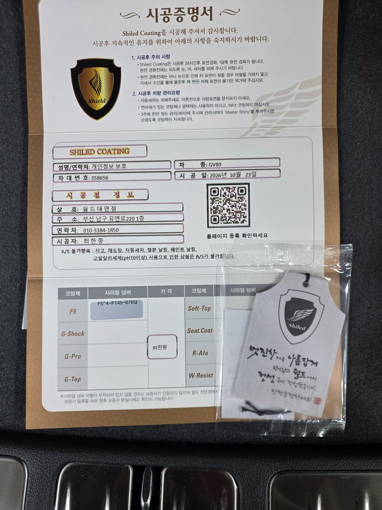

제네시스 GV80, 검정 신차입니다.
천장의 육각 조명이 보닛에 그대로 비친 한 대입니다.
출고 전 F5로 진행한 부산 유리막코팅 기록입니다.

육각 조명은 검정 보닛에서 무엇을 보여주나요?
조명 선이 끊기지 않고 곧게 비치는지 보여줍니다.
GV80 보닛은 가운데가 솟은 굴곡 면입니다.
육각 조명 선이 굴곡을 따라 휘어도 끊기면 안 됩니다.
코팅제가 남은 자리는 선이 번지거나 흐려집니다.



크레스트 그릴과 두 줄 램프 주변은요?
GV80은 격자 크레스트 그릴과 두 줄 램프가 앞뒤로 들어갑니다.
그릴 격자 사이와 램프 테두리는 틈이 좁습니다.
뒤쪽 GENESIS 레터링과 크롬 장식 주변도 따로 닦아냈습니다.



기술자의 팁
검정 차량은 한낮 햇빛 아래에서 세차하면 물자국이 바로 말라붙습니다. 그늘이나 이른 아침, 해 질 무렵에 세차해 주십시오.
GV80 검정에 F5를 올린 이유
F5는 색감의 깊이와 글로시함에 특화된 코팅입니다.
보닛이 넓은 검정 SUV는 F5의 장점이 잘 드러납니다.
코팅제는 대표가 직접 개발·제조한 제품입니다.
이번 부산 유리막코팅은 F5 싱글로 진행했습니다.


시공증명서도 함께 드립니다
모든 시공 차량에 시공증명서를 드립니다.
차종·시공일·코팅제 시리얼 번호가 적혀 있고, 홈페이지에 등록해 보증을 받으실 수 있습니다.

차종·시공일·코팅제 시리얼이 기재된 시공증명서
자주 묻는 질문
Q. 검정 GV80에 F5를 고른 이유는 무엇인가요?
A. F5는 색감 깊이와 글로시함에 특화된 코팅입니다. 넓은 보닛을 가진 검정 SUV는 광의 깊이 차이가 크게 보입니다.
Q. 크레스트 그릴은 어떻게 마무리하나요?
A. 격자 사이가 촘촘해 코팅제가 고이기 쉽습니다. 그릴 테두리와 도장면이 맞닿는 경계를 따로 닦아냅니다.
Q. 코팅한 검정 차는 언제 세차하는 게 좋나요?
A. 직사광선을 피해 그늘이나 이른 아침, 해 질 무렵에 하시는 것이 좋습니다. 한낮에는 물이 빨리 말라 자국이 남습니다.
Q. 왜 출고 전에 코팅하나요?
A. 도장면이 가장 깨끗할 때 올린 코팅이 가장 오래갑니다. 운행과 세차로 잔기스가 생기기 전에 입혀두는 것이 핵심입니다.
Q. 쉴드광택 위치와 예약은 어떻게 하나요?
A. 부산 남구 유엔로220 1F 쉴드광택입니다. 예약·상담은 010-3384-1850, 대표 최한중이 직접 상담하고 책임 시공합니다.
새 차일수록 시작점이 다릅니다. 가장 깨끗할 때 입혀두십시오.
제품을 직접 만드는 사람이 직접 시공합니다.
부산에서 신차 유리막코팅을 고민 중이시면 편하게 연락 주십시오.
어떤 차를 타냐보다 어떻게 타냐가 중요합니다~!
시공 중에는 전화를 받지 못할 때가 많습니다.
카카오톡으로 차종과 원하시는 시공을 남겨주시면 확인 후 답변드립니다.
쉴드광택 · 부산 남구 유엔로220 1F · 대표 최한중